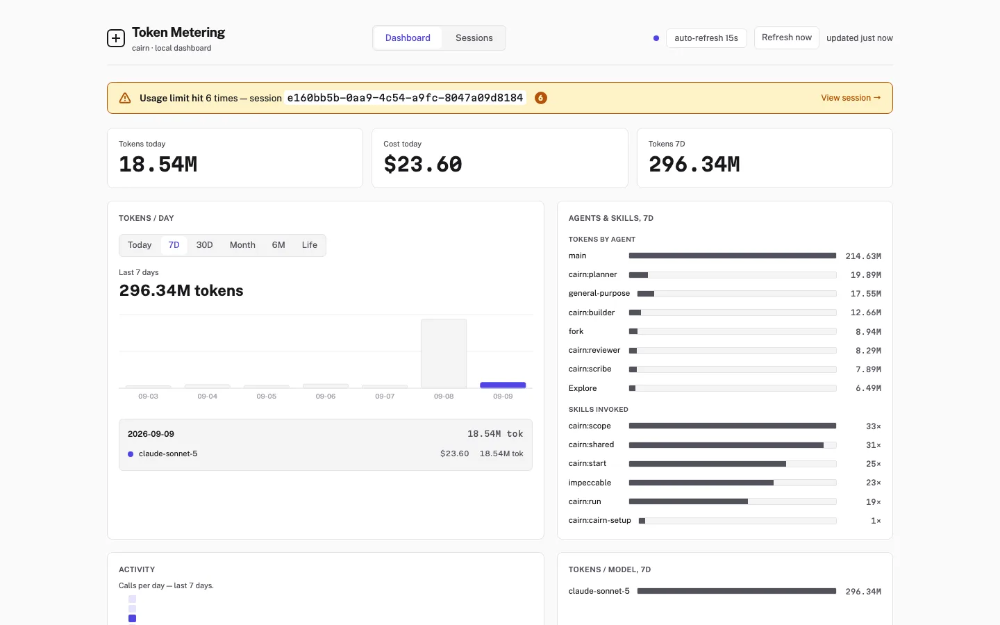

A Claude Code workflow you install like a dependency, and can read like one too.
cairn is a lean, on-demand, non-invasive development workflow for Claude Code. It leaves one line behind, reads everything else on demand, does nothing until your project has told it how things work, and comes out without a trace.
budget.lock // resolved, per feature
install
Two paths, cheap by default
Most changes run a fixed, two-hop chain. Nothing is provisioned (no task folder, no plan, no spec) unless the change actually needs one.
| Path | Flow | Budget |
|---|---|---|
| Default | builder → reviewer → PR. No task folder, no plan, no spec. |
≤ 40k |
| Escalated (opt-in) | planner → builder → reviewer → PR, with docs/tasks/<slug>/STATE.md for resume. |
≤ 150k |
When to escalate: the change spans more than one submodule, alters a published contract (API, schema, or event), or you can't describe it in two sentences. Escalating is a deliberate choice for those cases, not a fallback for uncertainty.
Every artifact loads on one of four terms
Tracked in docs/BUDGET.md and measured, not estimated.
| Class | Cost | Rule |
|---|---|---|
| Always loaded | every turn | Only the ≤ 400 B marker block in your CLAUDE.md, plus each agent/skill/command's description. Nothing else, ever. |
| On demand | once, in one context | Agent bodies, SKILL.md, reference/*.md, .harness/*.md, loaded by an explicit read at a named step. |
| Executed | ~0 tokens | Scripts, run via Bash, returning compact JSON. The model reads the output, never the source. |
| Never loaded | 0 | docs/REGISTRY.md, docs/BUDGET.md, tests, CI config: read by tooling and humans only. |
What cairn writes in your project
Everything else is out of bounds, including paths that would otherwise be convenient.
+ writes
- +CLAUDE.mdone marker block, on confirmation
- +.harness/*.mddrafted by cairn, owned by your team
- +.harness/local/this developer's, never committed
- +docs/tasks/<slug>/escalated path only
- +.cairn/runtime state, self-ignoring
- +the files you asked to changethat's the job
− never writes
- −.claude/settings*.json
- −.claude/agents/, skills/, commands/, hooks/
- −your project's own .gitignore
- −CI config, manifests, lockfiles
- −git hooks, .git/ internals
- −anything outside the repo root
Run /cairn-teardown any time: it removes the marker block and .cairn/, and shows exactly what's left behind and why.
Three postures, one chain
Not three different chains: the same builder → reviewer chain, run three ways.
interactive: normal chat session # cairn asks when it needs to
attended: tool calls auto-accepted # a human is still there to answer
unattended: dispatched, then left alone # escalated path only
cairn makes and flags its own assumptions instead of asking, and stops at one of three outcomes (done, needs-human, stalled) written into STATE.md. It never publishes on its own: it stops once reviewer passes and leaves merging or opening a PR to you.
Cheap by default, not cheap by claim
cairn 2.0 is a rewrite of its own predecessor, measured directly from both repos.
| Metric | Before | After |
|---|---|---|
| Agents | 18 (278 KB) | 4 (5.5 KB) |
| Skills | 10 (87 KB) | 10 (14.6 KB) |
| Baseline tokens before you type | ~9,000 | ~800 |
| Tokens per feature | 200,000–400,000 | ≤ 40,000 / ≤ 150,000 |
Measured against two other agent frameworks evaluated during this redesign, kept unnamed since they're private projects and cited only for their numbers. One carried a ~52k-token baseline before any work began and 0.7–1.5M+ tokens for a single medium feature, driven by a large always-loaded registry and 10+ agent hops per task. The other proved a ~1–2k token baseline is possible with almost no framework at all, at the cost of near-zero enforcement. cairn 2.0's target came from holding both extremes against each other: a small, disclosed baseline and a bounded cost per feature.
See what your own sessions cost
Don't take cairn's numbers on faith either. Run /cairn-tokens to start a local dashboard, scoped to your own machine, showing exactly what your sessions cost: tokens and dollars, per agent, per model, per skill, per call.

The real dashboard UI, running against illustrative demo data (not a real session's numbers). It's local-only: no accounts, no cloud sync, nothing leaves your machine.